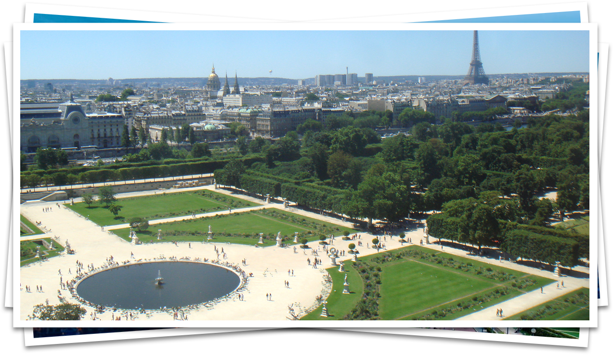

Chapter II.
The Tuileries Garden
The Tuileries were a key project in the history of garden design and in development of Paris as an axial city. The Tuileries garden was started by Catherine de Medici. Loving music, the arts, literature and science, she thought of herself as Italian, ordered her clothes from Mantua and loved the Medici's Florentine gardens. Pierre le Nôtre became chief gardener and his son, Andre le Nôtre's father, held the same position. The Jardin de Tuileries was made on the site of a tile-works (tuileries), within the old walled city on the banks of the River Seine. The original division of the space, by allees, has survived many changes. It began as a private royal pleasure garden, with flowers and fruit. After 1594, Henri IV had a terrace built along what is now the Rue de Rivoli. In his book, Jardin de plaisir (1651), Claude Mollet used the Tuilleries as a model of how a garden should be designed. Andre le Nôtre re-designed the Grand Jardin 1665-72 and built a terrace along the riverbank where his father's house had stood. He also ope-
Modern day panorama of the garden.
Page 44